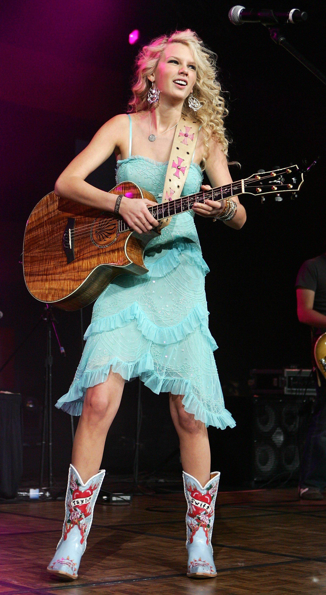

In 2006, Taylor Swift released her debut album, Taylor Swift, when she was 16 years old. The album enjoyed commercial success; in the United States, it peaked at number five on the Billboard 200, topped the Top Country Albums Chart for twenty-four non-consecutive weeks, and was certified four times platinum by the Recording Industry Association of America. The songs on the album describe coming of age experiences such as insecurity, young love, and teenage angst. Most songs on the album were written during Swift's freshman year of high school. Taylor Swift made her the first female solo artist in country music to write or co-write every song on a platinum-certified debut album. From her very first album, Swift established her talent for songwriting and storytelling.
